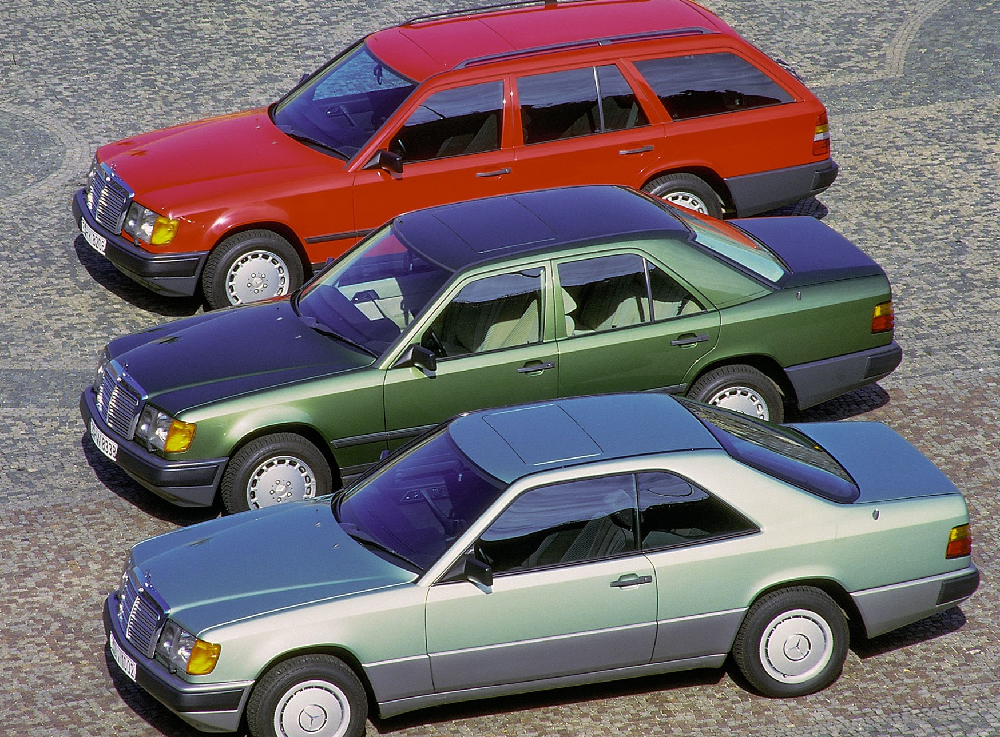
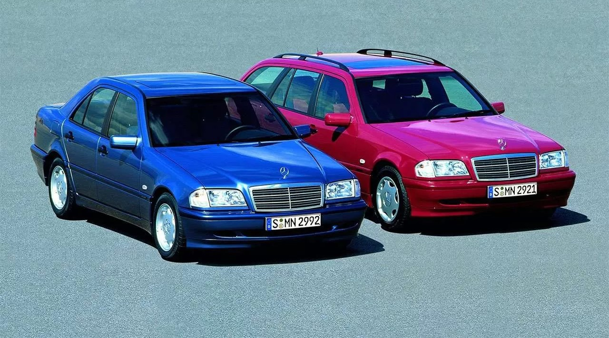
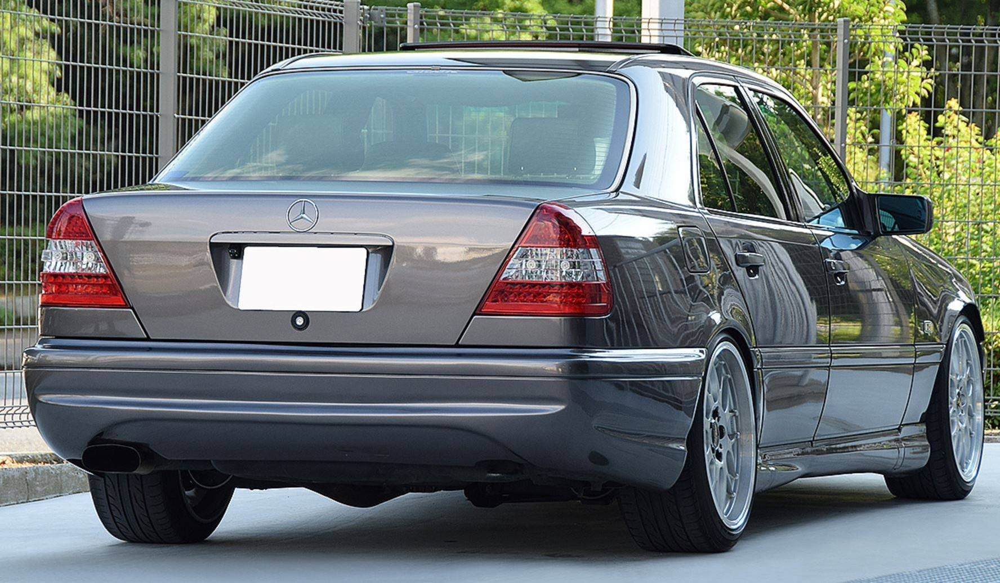
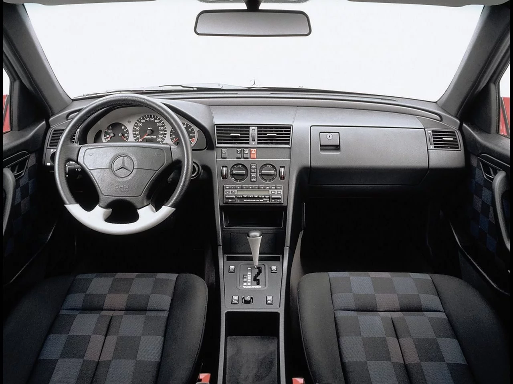

Mercedes-Benz S Class W140 (1990-1997)


З перших років після початку виробництва автомобілів серії W126, інженери Мерседес-Бенц приступили до опрацювання нового автомобіля S-класу. На чільне місце було поставлено максимальний комфорт і безпеку пасажирів.
Для досягнення цих цілей були запропоновані всі найбільш передові рішення.
У всіх дверцятах передбачалося подвійне скління — справжній склопакет. Таким чином, вирішувалося питання зниження шуму, а також позбувалися від запотівання скла.
Самі двері повинні мати спеціальний привід для плавного і беззвучного їх захлопування.
Був запропонований новий більш комфортний тип крісел з надувними багатоконтурними спинками і сидіннями. Неодмінним атрибутом комфорту було електричне регулювання положення крісел у різних напрямках. Нове покоління системи клімат-контролю і вугільний фільтр зовнішнього повітря забезпечували хороший мікроклімат в салоні.
Багатоважільна підвіска з адаптивною системою регулювання рівня дорожнього просвіту дозволяла зменшувати крен кузова при швидкісному проходженні поворотів.
Активній і пасивній безпеці було приділено максимум уваги. Система АБС була поліпшена, для однаково впевненого маневрування і в обмеженому просторі міста, і на швидкісних трасах був розроблений новий параметричний гідропідсилювач керма. Два великих склоочисники (один з вистрибуючим механізмом) очищали 90 % поверхні вітрового скла. Були встановлені нові паски безпеки, що мають параметричне натягування, що дозволяло пасажирам практично не помічати їх.
Однак,найзначимішим нововведенням було застосування нової системи електроніки. Раніше на автомобілях Мерседес електроніка була представлена в самих мінімально необхідних кількостях, здебільше через недостатню надійність та чутливість до різких перепадів температур. У серії W140 (а саме такий код було присвоєно новій серії) була застосована нова системна мережа даних CAN (Controller Area Network). Вона дозволила об'єднати в одне ціле управління практично всіма найважливішими системами: запалюванням, регулюванням упорскування, електронною педаллю газу, антипробуксовочною системою. А також реалізовувати безліч додаткових функцій. Вся система управління була розташована в салоні для запобігання впливу несприятливих факторів. Автоматична коробка перемикання передач також отримала «мозок». Єдиний бортовий комп'ютер постійно відстежував працездатність різних вузлів і у разі збоїв або відмов підсистем коригував роботу всієї системи для продовження оптимального функціонування автомобіля (при цьому на табло висвічувалася наявність виниклої несправності). Система комп'ютерної діагностики в сервіс-центрах, що підключається до бортового комп'ютера, повинна була допомогти об'єктивно виявити несправності, не покладаючись більше на суб'єктивні описи проблем водіями.
праведливо вважаючи, що у світі будуть і далі посилюватися норми забруднення навколишнього середовища, для W140 були підготовлені нові двигуни, побудовані з урахуванням останніх екологічних вимог. Вершиною модельного ряду нової серії повинен був стати новий шестилітровий V-подібний 12-ти циліндровий двигун — пряма відповідь появі у БМВ, в 1987 році аналогічного п'ятилітрового на моделі 750iL (E32). Новий двигун з легких сплавів мав 4 клапани на циліндр, регульовані розподільчі вали, інжектор LH-Jetronic з двома блоками впорскування та двома комутаторами і котушками запалювання (для кожного ряду циліндрів). Двигун був також включений в шину даних CAN.
Високі технічні показники, чудові динамічні характеристики і небувалий рівень комфорту і безпеки пасажирів дозволили серії W140 залишатися на вершині Олімпу автомобільного практично до появи його чудового наступника серії W220 в 1998 році.
Mercedes-Benz E Class W124 (1984—1997)
На початку 80-х прийшла пора готувати заміну одному з наймасовіших легкових автомобілів фірми Мерседес-Бенц — серії W123. Особливо це стало очевидним, коли став падати рівень продажів після виходу в світ Mercedes-Benz W201. Крім того, з появою нового автомобіля Audi 100 посилилася конкуренція в середньому класі. Рішення було цілком очевидним — створити в стислі терміни на базі технічних рішень і конструкторських і дизайнерських розоробок новий автомобіль середнього класу.
Практично все, що було напрацьовано для компактної серії, перекочувало у середній клас. Були враховані і всі конструктивні недоліки, виявлені в процесі експлуатації W201 в перші роки. На нову серію було вирішено поставити практично всю гаму двигунів, що існувала в той час. Однак, посиленні норми викиду шкідливих речовин і посилені вимоги до динамічних характеристик, зажадали від конструкторів розробити нові більш потужні і економічні двигуни. Тому на додаток до порівняно малопотужних двигунів були розроблені нові рядні «шістки» — бензиновий серії M103 (він же став встановлюватися і на оновлений ряд моделей S-класу в кузові W126) і дизельний серії OM603.
Прем'єра нової серії відбулася у Севільї 5 листопада 1984 року. Машина була прийнята дуже добре. Свіжий дизайн і сучасна конструкція виграшно виглядали на тлі вже морально застарілого попередника. Добре прораховані зони деформації кузова, установка АБС і подушки безпеки для водія забезпечували високу активну і пасивну безпеку. Аеродинаміка була істотно (на третину!) поліпшена. І хоча на фоні уже звичного W201 новий автомобіль не здавався особливим, він був приречений на успіх.
Проте не обійшлося і без недоліків. Стислі терміни розробки та впровадження автомобіля позначилися на якості. У перші місяці власники скаржилися на проблеми з двигунами, що деренчить салон, дрібні проблеми з рульовим керуванням і ходової. Особливо гостро це відчули таксисти, тому що традиційно значна частина Мерседесів середнього класу використовувалася як таксі, готельні й орендовані автомобілі.
Автомобіль постійно оновлювався, для нього пропонувалося дедалі більше опцій. Поява купе й універсала було цілком очікуваною. Також традиційним був випуск подовжених седанів і кузовів для спецавтомобілів. Але приємною несподіванкою стала поява повнопривідної версії 4MATIC («фірматік»). Це стало відповіддю на зрослу з боку фірм Ауді та БМВ конкуренцію в середньому класі. Серія W124 здобула заслужену повагу за високу надійність двигунів, добре продуману ергономіку просторого салону, відмінну якість складання і довговічність підвіски. Випущений тиражем понад 2,5 млн примірників, він став справді народним автомобілем і в 1995 році, після 11 років успішного виробництва, був замінений новою серією W210.
Mercedes-Benz С Сlass (W202) (1993-2000)
  Mercedes-Benz W202 — автомобіль німецької марки Mercedes-Benz, перший з серії С-класу. Машина середнього (D) розміру прийшла на заміну W201 або 190-му Мерседесу, першому в історії фірми компактному автомобілю. Новий Comfortklasse випускався в кузовах седан (W202) з 1993-го по 2000-й рік і універсал (S202) з 1996-го по 2001-й рік .
Розробка нового кузова W202 почалася в 1987 році і велася відразу в двох напрямках: дизайнери готували новий кузов, а конструктори проробляли ходову частину. У результаті до 1989 року новий дизайн був представлений керівництву компанії, і після остаточного схвалення і затвердження, проектування перейшло у другу фазу.
У 1990 році було виготовлено перші прототипи. Задня п'яти-важільна підвіска перейшла від попередньої серії W201, а передня була змінена і тепер більше нагадувала підвіску S-класу. Кузов був значно перероблений. Всі лінії стали більш округленими, м'якими. Найбільша відмінність проявилося в конструкції задньої частини кузова. Багажник, нарешті, отримав низький поріг, повністю змінилася задня оптика. Прибравши бензобак з традиційного місця за задньою спинкою, конструктори вперше для сучасних седанів запропонували розкладний задній диван. Це дозволило перевозити довгомірні предмети усередині салону, проте вимагало значних змін в конструкції кузова для надання йому достатньої жорсткості. Розміри в порівнянні з попередником трохи збільшилися, для задніх пасажирів стало більше місця і в ширину, і у висоту.
Загальний дизайн кузова відповідав тодішньому баченню дизайнерів Мерседес-Бенц. Він мав спільні корені з оновленою серією W124 E-класу і нещодавно випущеною новою серією W140 S-класу. Простежувалися схожі загальні лінії кузовів, форма багажників, оптики, капотів. Однак у цей період дизайнери починають пошуки нового обличчя майбутніх Мерседесів. Як результат — збільшені задні ліхтарі, які піднялися до верхнього кута задніх крил.
Всі автомобілі Коррадо, незалежно від року випуску, оснащувалися переднім приводом, а двигуни працювали в парі з 5-ступінчастою автоматичною коробкою передач, варто згадати, що в якості опції доступна 4-швидкісна автоматична коробка передач.
Нова серія була представлена в травні 1993 року. Відразу три важливих нововведення відбулися з випуском серії W202. Після успішного проникнення на ринок компактних моделей компанія готувалася до нового розширення модельного ряду легкових автомобілів. Для цього була потрібна чітка класифікація моделей. У результаті, в 1993 році з'явилися S-, E-і C-класи, як основні.
Друге важливе нововведення було продовженням першого. З появою нової системи класифікації купе, кабріолети і родстери ставали окремими класами і мали вже окремі позначення заводських серій. Кілька різних серій базувалося на одній платформі. Так в 1993 році седан серії W202 став платформою для автомобілів інших серій: універсалу T-Limousine S202, родстера SLK R170, купе CLK C208 і кабріолета CLK A208.
Третім нововведенням став поділ кожної серії на кілька варіантів виконання. Перший експеримент такого роду був проведений на попередньому W201, коли був запропонований варіант Avantgarde в трьох виконаннях (rosso, azzurro і verde). Серія W202, крім базового варіанту, відразу ж стала пропонуватися ще в трьох: Esprit, Sport і Elegance. Базова версія згодом отримала офіційну назву Classic. Всі без винятку варіанти стандартно оснащувалися АБС, п'ятиступінчастою КПП, подушкою безпеки для водія, центральним замком, каталізатором, підсилювачем керма. Відмінності варіантів були, в основному, в оздобленні як кузова, так і салону. Esprit був розрахований на молодь і пропонувався з широкою гамою кольорів салону і кузова, а також був на цілих 32 мм нижче, ніж Classic. Sport також був на 32 мм нижче, вирізнявся особливою карбоновою обробкою центральної консолі, жорсткішою підвіскою, спортивними передніми сидіннями, білими передніми покажчиками повороту, молдингами, пофарбованими в колір кузова, і широкими шинами 205/60 R15 на легкосплавних дисках (дизайн з п'ятьма отворами). Elegance був вершиною класу і оснащувався електричними склопідйомниками спереду і ззаду, білими передніми покажчиками повороту і широкими молдингами контрастного (по відношенню до кольору кузова) кольору зі вставками хрому, мав обробку салону деревом, салонний фільтр від пилу, хромовані накладки на ручки дверей.
Всі варіанти практично в довільному порядку могли комплектуватися одним з пропонованих двигунів. Усього спочатку пропонувалося 3 бензинових інжекторних двигуна (1,8 л, 2,2 л і 2,8 л) і три дизельних (2,0 л, 2,2 л і 2,5 л). З розвитком серії вигляд її постійно оновлювався, пропонувалися нові двигуни, велика кількість опцій з часом переходила в розряд стандартного устаткування, нові опції зі старших класів ставали доступними і для C-класу.
Автомобіль виявився дуже популярним — мільйонний екземпляр зійшов з конвеєра менш ніж через чотири роки з початку випуску (попереднику для цього знадобилося майже шість років). Усього W202 випускався до 2000 року, поки його не змінив наступник - серія W203.